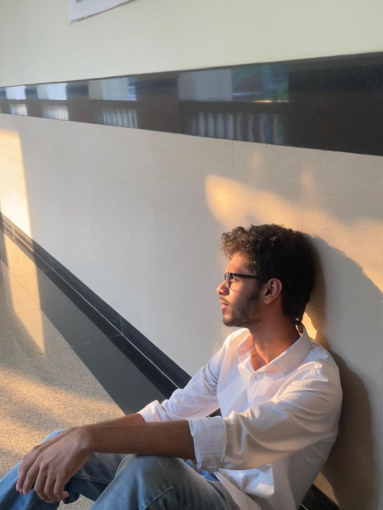

Meet the Team
This project was developed through research, design thinking, and exploration of how technology can help preserve traditional Indian art forms.

Mudit Chandak
Research, Development & UI/UXFocused on research, system thinking, and understanding how digital archives can preserve traditional Indian motifs and cultural knowledge.
Sanjana Katerina
UI / UX DesignWorked on creating a clean and engaging visual experience that makes traditional art more accessible to younger generations.
Sahasra Yuktha
Research & DevelopmentFocused on research, system thinking, and understanding how digital archives can preserve traditional Indian motifs and cultural knowledge.
Karan S Siddu
Documentation & PresentationContributed towards structuring the research, user studies, and presentation flow for the project.
K Pardha Saradhi
Documentation & PresentationContributed towards structuring the research, user studies, and presentation flow for the project.

Madishetty Indratej
Documentation & PresentationContributed towards structuring the research, user studies, and presentation flow for the project.
David
Documentation & PresentationContributed towards structuring the research, user studies, and presentation flow for the project.